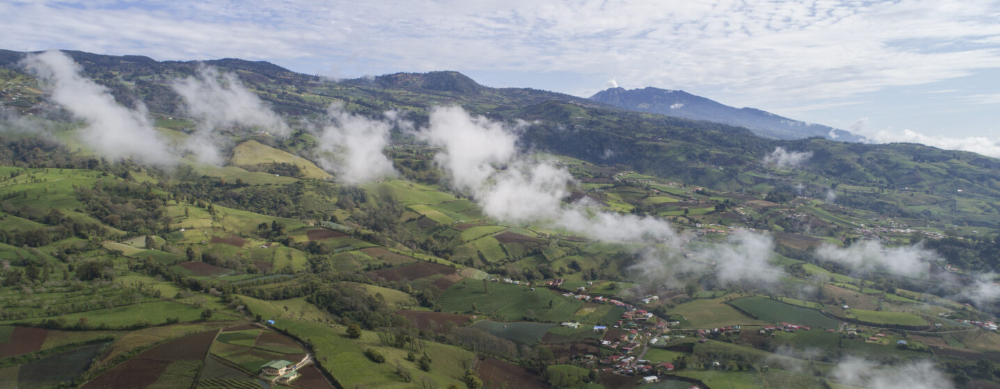

Justificacion
Los habitantes de la región de Cartago dependen de manantiales naturales para su agua potable. Las concentraciones de contaminantes en estos manantiales se miden ocasionalmente y cuando estas concentraciones superan los valores críticos, se recomienda encarecidamente a los consumidores de estos manantiales que dejen de beber el agua. En ese caso, se deben encontrar otras soluciones para suministrar a los ciudadanos agua potable limpia.
A menudo, un aumento en la concentración de nitratos en el agua es causado por actividades antropogénicas. Los grandes contribuyentes pueden ser la fertilización excesiva de las tierras agrícolas y la fuga contaminada de aguas residuales domésticas. La falta de conocimiento sobre el uso de pesticidas y fertilizantes puede ser una razón de los problemas, así como fallas en el sistema de descarga doméstico. El fertilizante contiene amonio, que se convertirá en su forma más estable, nitrato. Algunos fertilizantes ya tienen el compuesto de nitrato en forma de nitrato de amoníaco. Este nitrato puede escurrirse a cuerpos de agua o filtrarse al suelo y contaminar el agua subterránea en el acuífero. Otra causa de las altas concentraciones de nitratos puede ser el tratamiento insuficiente de las aguas residuales. Este proyecto tiene como objetivo generar una base de datos espaciales, actualizada, homologada y que permita utilizar técnicas de teledetección y algebra de mapas para determinar la contaminación por nitratos, con el fin de poder modelar escenarios de la situación actual y como se puede mejorar la toma decesiones utilizando esta tecnología.